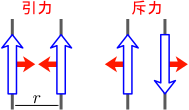
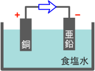
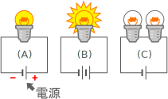
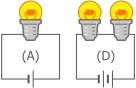
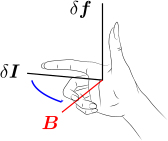

電流間には力が働く：アンペール力
電流が流れている導線を2本用意し、互いに近づけていくと、右図のような力が働くことが知られている。これをアンペール力という（青矢印が電流、赤矢印がアンペール力）。
アンペール力の説明を行うには、まず電流などの定量化が必要である。その後、直線あるいは曲線形状の電流でのアンペール力を与え、一般の電流密度を持った場合へと進めることにする。これらを以下の3つの節に分けて議論する：
2.1電流・電圧・抵抗の定量化
この節では、電気回路を用いて電流などの概念を導入する。電磁力学編の主要なテーマではないので、簡略化して軽く触れるだけにする。
電池
電流を発生させるための典型的な装置は、電池である。単純な電池としては、右図のように、電解液（飽和食塩水など）に銅と亜鉛を浸けて導線を繋いだものがある。このような電池をボルタ電池といい、市販されている電池はこれを改良したものである。銅の側を正極、亜鉛の側を負極と言い、それぞれ「＋」と「－」で表す（同図赤色部分）。電流の流れる向きは、正極⇒負極と定義する（同図青色矢印）。正極と負極を合わせて電極という。
なお、ボルタ電池に電流が流れていることは、正極に泡（水素）が発生したり、負極の亜鉛が溶けていくことから分かる。これを使えば、電流の定量化が可能である。例えば、1秒間あたり溶けた亜鉛の質量に比例するようにするといった具合である。硝酸銀水溶液に電流を流すと電極には銀が析出するのだが、昔はこれを用いて、単位時間当たりの銀の析出量に比例するように電流が定義されていた。
電流・電圧・抵抗
右図のように、電池電源（電池）に豆電球を繋いだ回路を考える。基準となる回路(A)に対し、同じ電源を2つ直列につないだもの(B)はより明るくなり、豆電球を2個直列につないだもの(C)はより暗くなる。
これを見ながら、電流・電圧・抵抗を以下のように直観的に導入する：
- 電流：導線を切断すると電球は光らなくなるので、導線中を何かが流れていると思われる。この流れを電流といい、電球が明るいほど大きな電流が流れているとみなす。図の例でいえば、最も暗いのが(C)で、明るいのが(B)なので、電流の大きさは(C)<(A)<(B)の順になる。
- 電圧：電源は、電流を流すための装置なので、「圧力」のようなものを生み出していると考えられる。「圧力」が大きいほど電流が流れやすいわけである。その「圧力」のことを電圧という。例えば上図の(B)では、電池を2つ直列につなぐことで(A)よりも電圧が大きくなり、より大きな電流が生じる（＝豆電球は明るくなる）。
- 抵抗：電球のフィラメントなどが持つ、電流の流れを妨げる作用のことを、抵抗（または電気抵抗）という。大きいほど電流が流れにくくなる。例えば上図の(C)では、抵抗器（ここでは豆電球）を直列につなぐと電気抵抗が大きくなり、電流が小さくなる（＝豆電球は暗くなる）。
オームの法則(

次に、上述の電流・電圧・抵抗の定量化を考える。右図の(D)は、電池・豆電球を2つ並列に繋いだものである。(A)は上図のものと同じである。この時、(A)と(D)の豆電球の明るさは同じになる。これは次のように解釈するのが自然だろう：(D)では、電圧
電圧
このように、電圧と抵抗の値は、直列につないだときに加法性を持つように定量化すればよい。このように定量化した電圧の単位をボルトと言い
電流の値
2.2電流要素から受けるアンペール力
電流が流れている導線同士の間には、電流に比例する力（アンペール力）が働くことが知られている。
この節では、電流要素間に働くアンペール力が式(
平行電流に働くアンペール力：式(
電流間に働く力を考えるために、まず最も単純な場合、即ち、2本の導線が平行な直線である場合を扱う。アンペール力の向きは右図のように、電流の方向が揃っている場合には引力、逆向きの場合には斥力になる。この力は、普通の乾電池を用いて確認できる程度の大きさになるので、実験も容易である。
アンペール力の大きさについては、両方の導線で等しくなる（これは作用反作用の法則が成り立っているということであり、自然である）。アンペール力の大きさ
式(
なお、式(
一般の形状の場合、電流要素間のアンペール力(
ここからは、導線が直線でなく一般的な形状の場合を考える。電流の向きを考える必要があるのでベクトル表記する：
即ち、試験電流要素
後は、2つの電流要素間に働くアンペール力が分かればよい。
電流要素間のアンペール力：式(
電流要素間に働くアンペール力をけってしたい。電流要素の距離依存性について考えるために、第1章のクーロン力の場合を参考にする。クーロン力は逆2乗則に従っていたわけだが、直線電荷（第1章の【1.4-注1】）の場合には、逆1乗となっていた。一方、平行電流の場合のアンペール力(
次に、電流要素の方向依存性について考える。試験電流要素
平行電流の場合のアンペール力(
以上をまとめると、電流要素同士の間に働くアンペール力は
【2.2-注1】電流要素に対するアンペール力
位置
補足
係数
2.3電流全体から受けるアンペール力：ビオ・サバールの法則
これまでは、電流を曲線で表していた。しかし実際には、1次元的な導線だけではなく電流が2次元的・3次元的に分布している場合もある。従って、第1章で電荷密度を定義したように、電流についても、電流密度を定義することができるはずである。
この節では、第1章でクーロン力から電場を定義したように、アンペール力から磁場を定義し、電流密度分布から磁場を導くビオ・サバールの法則(
磁場

式(
なぜ
【2.3-注1】磁石も磁場を作る
電流は、磁石とも相互作用することが知られている。例えば、方位磁石を電流の近くに寄せると、その向きが狂う。磁石を用いたこの相互作用は、通常、電流間に働くアンペール力よりも桁違いに大きなものになり、容易に観測できる。実際、歴史的には、最初に電流によって方位磁石が狂うことが発見され（エルステッドの実験）、それを受けた後の研究により、電流間に力が働くことが発見されている。

さらに、右図のように、ソレノイド（＝円筒状のコイル）に電流を流したものは、棒磁石と同じような相互作用をすることが知られている（電磁石）。即ち、電流の周りの場と磁石の周りの場は、同じものであるとみなせるのである。これが、磁場という名前の由来である。磁石には常にN極とS極が現れ、磁石を分割しても、N極だけあるいはS極だけを取り出すことはできないが、ソレノイドとの等価性を考えるともっともらしい。
電流密度とビオ・サバールの法則：式(
これまでは導線を1次元的な曲線と考えてきたが、太い導線や平面的な導体の場合はそのような近似ができない。そのような場合にも対応するためには、電流密度
電流密度